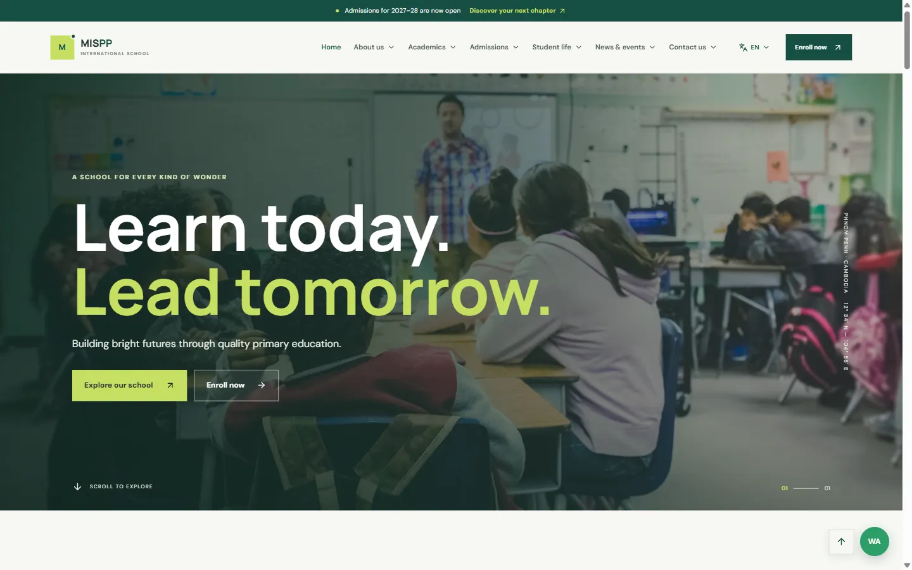

MISPP International School
A warm, modern website for a primary school, guiding parents from first visit to online application.

- Client
- MISPP International School
- Role
- UI/UX design & front-end
- Platform
- JavaScript app (Vite)
- Languages
- English & Khmer
The challenge
MISPP International School is a primary school in Phnom Penh (Grades 1–6). Its main goal online is simple: help parents feel at home and make it easy to apply. The site had to feel warm and personal, not corporate, while still answering every practical question about admissions.
The approach
The design leads with emotion, then gets practical. A full-screen photo hero with the line “Learn today. Lead tomorrow.” sets the tone, followed by short, friendly sections about belonging, teachers who know each child, and room to explore.
- Academics: a curriculum overview plus a page for every grade, subjects and teaching methodology.
- Admissions: requirements, process, tuition & fees, online application, book a school visit and FAQ.
- Student life: sports, clubs, canteen and student support.
- News & events: announcements, an event calendar and photo and video galleries.
“A little wonder can change everything. We help every child find theirs.”
Designed to convert
An admissions banner sits above the header, and an “Enroll now” button stays in the navigation on every page. A WhatsApp button gives parents a quick way to ask questions. A language switcher lets families read the site in English or Khmer.
Visual identity
A deep green and fresh lime palette, large confident type and full-bleed photography give the school a modern, optimistic feel. It is built as a fast JavaScript app (Vite), so moving between pages feels instant.
The result
The site is live at mispp.edu.kh, with a clear path from first impression to enrolment.